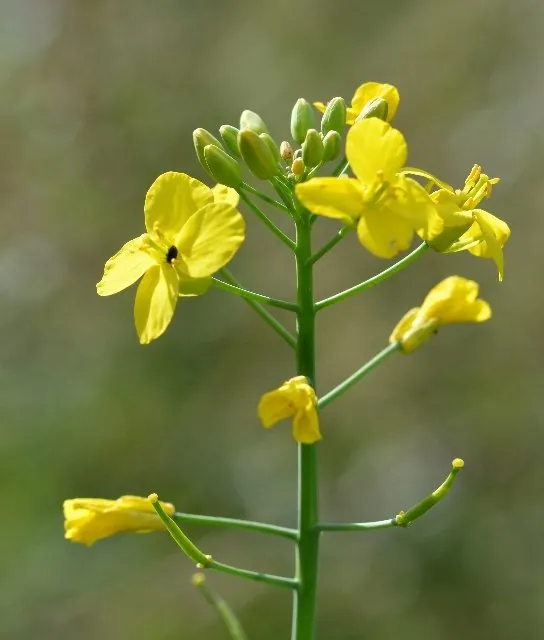

农作物与经济植物 · 植物界
苤蓝 Brassica oleracea var. gongylodes

十字花科二年生草本，茎基部膨大成球、皮色翠绿或紫红，肉质脆嫩似萝卜，可生食、炒食或腌渍食用。
- 分类
- 门被子植物门纲木兰纲目十字花目科十字花科属芸薹属
- 栖息环境
- 冷凉地区的菜园与农田，喜光、耐寒、喜疏松肥沃土壤
- 地理分布
- 原产欧洲地中海沿岸，欧洲广泛栽培，中国南北各地有种植
- 保护级别
- 暂无评估；栽培作物
物种志
苤蓝为十字花科芸薹属二年生草本，是甘蓝的一个变种，株高 30–60 厘米。茎基部膨大形成扁球形肉质茎，直径 5–10 厘米，皮色浅绿或紫红，肉质白色脆嫩。叶互生，长椭圆形，蓝绿色，有长叶柄，着生于球茎上部。第二年抽薹开花，花黄色，总状花序；长角果，种子黑褐色。
苤蓝原产欧洲地中海沿岸，16 世纪起在欧洲广泛栽培，中国南北各地亦有种植。膨大的球茎可生食、切丝凉拌、炒食或腌渍，口感介于萝卜与茎蓝之间，脆甜多汁；嫩叶也可作蔬菜。它富含维生素 C 与膳食纤维，热量低。栽培喜冷凉、阳光充足与疏松肥沃的土壤，多为春秋两季育苗移栽，生长期 60–80 天，球茎充分膨大但未木质化时采收，过晚则纤维增多。
形态与习性
- 原产地欧洲地中海沿岸
- 株高30–60 厘米，球茎直径 5–10 厘米
- 球茎扁球形，皮浅绿或紫红，肉白色脆嫩
- 用途生食凉拌、炒食、腌渍，嫩叶可食
- 栽培喜冷凉，春秋育苗移栽，生长期 60–80 天
- 采收球茎充分膨大未木质化时采收
趣味知识
- 苤蓝膨大的部位是茎而不是根，所以削皮后能看到一圈圈的维管束。
- 它生吃像脆甜的萝卜，切丝凉拌是德国与东欧的常见吃法。
- 紫皮品种的球茎切开后内部仍是白色，花青素只存在于表皮。
- 采收过晚会木质化、纤维粗硬，所以要在球茎刚长足时摘下。